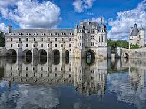
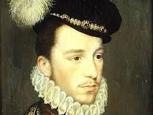
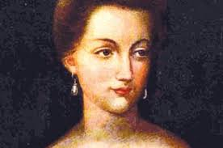
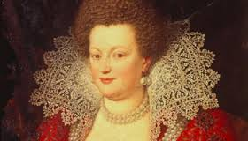

Chenonceau
Un peu d'histoire
Offert par Henri II à sa célèbre favorite Diane de Poitiers, Duchesse de Valentinois. Elle fit aménager sur la rive droite du Cher, par Pacello da Mercoliano, le jardin qui porte encore son nom; elle confia par ailleurs à son architecte ordinaire, Philibert de l’Orme, le soin de construire un pont reliant le château de Bohier à la rive gauche de la rivière afin d’y implanter de nouveaux jardins. À la disparition de Henri II, mortellement blessé lors d’un tournoi en 1559 par le capitaine de sa garde écossaise Gabriel 1er de Montgomery, Catherine de Médicis, devenue Régente, contraignit Diane de Poitiers, sa rivale dans le cœur du roi, à restituer Chenonceau à la Couronne.
Henri II
Henri II, né le 31 mars 1519 à Saint-Germain-en-Laye et mort le 10 juillet 1559 à Paris, est roi de France de 1547 à sa mort. Deuxième fils de François Ier et de Claude de France, il devient l'héritier du trône à la mort de son frère aîné en 1536. Il meurt accidentellement à l'âge de quarante ans : le 30 juin 1559, lors d’un tournoi tenu rue Saint-Antoine à Paris (devant l'ancien hôtel des Tournelles), Gabriel de Montgommery, capitaine de sa garde écossaise, le blesse d'un éclat de lance dans l'œil. Il en meurt dix jours plus tard.
Diane De Poitiers
Diane de Poiriers (3septembre 1499 ou 9 janvier 1500 en Dauphiné - 26 avril 1566 à Anet), comtesse de Saint-Vallier, duchesse de Valentinois, demeure pendant plus de vingt ans la favorite d'Henri II, roi de France. Dotée d'un sens aigu du pouvoir et de ses intérêts financiers, elle exerce une grande influence sur le roi, qui l'aime sincérement, bien qu'elle soit de vingt ans plus âgée que lui. Sous son règne (1547-1559), elle bénéficie d'un grand nombre de dons et d'honneurs.
Catherine de Médicis
Par son mariage avec le futur Henri II, elle devient Dauphine et duchesse de Bretagne de 1536 à 1547, puis reine de France de 1547 à 1559. Mère des rois François II, Charles IX, Henri III, des reines Élisabeth (reine d'Espagne) et Marguerite (dite « la reine Margot », épouse du futur Henri IV), elle gouverne la France en tant que reine-mère et régente de 1560 à 1563.
Horaires de visite
Le parc est ouvert en libre accès tous les jours. Le château est ouvert toute l’année sauf les 1er janvier et le 25 décembre. Le château sera également fermé le 26 novembre 2018. du 1 novembre au 31 mars : de 9h à 17h (Basse saison) du 1er avril au 31 octobre : de 9h à 18h (Haute saison) Dernier accès ½ heure avant la fermeture du château Fermeture des jardins à la française 30 minutes avant la fermeture du château.